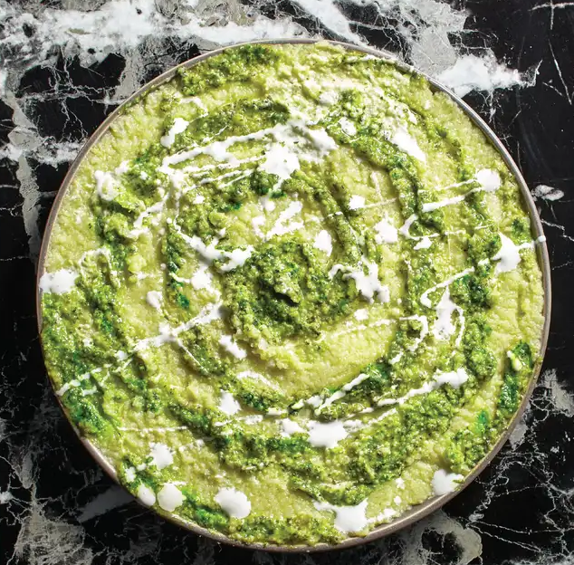

Hot Dogs On A Rick

Note from Rick
So here's another "Morty Recipe" I kind of changed up myself!(For that extra credit?)
It's a CAULIFLOWER PORTAL MASH!!
It's like mashed potatoes - but CAULIFLOWER!
Ingredients
- 2 Heads Green Cauliflower, Broken Down
- 2 Cloves of Garlic, peeled
- 4 Cups of water
- 1 Tablespoon of Salt
- 2 Tablespoons of Butter
- 1/2 Cup Vegetable Broth
- 1 Teaspoon Salt
- 1/2 Teaspoon Lemon Juice
- 2 Tablespoons of Pesto
- 2 Tablespoons Crema
Put it all together
- Set water to simmer in a medium pot then cook the cauliflower and garlic until tender.
- Transfer veggies to a food processor, add butter, broth, salt and lemon juice. Puree until smooth then transfer to a round serving dish.
- Using a spoon or spatula, swirl pesto round the top of the mash to create the effect of Rick's portal. Finish with drizzled crema for the final touch.